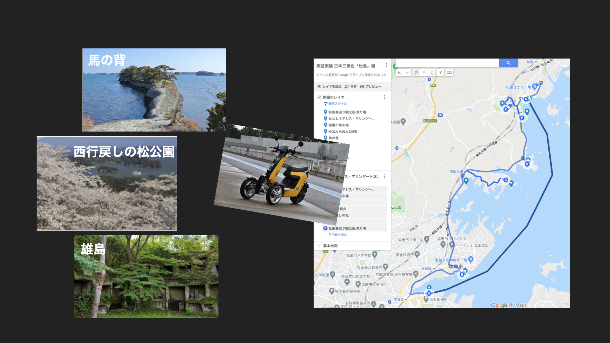

モビリティ無人レンタルシステム
K.Oosawa
地方の観光促進の為に
アフターコロナを意識した
モビリティの無人レンタルサービスを提案します。
モビリティの無人レンタルサービス
鍵をレンタル

モビリティを利用してもらう
鍵を返却

収入はモビリティのレンタル料金
モビリティ無人レンタルシステム構成

- ①-1 鍵のレンタル許可要求
- ①-2 BT通信などにより、鍵のレンタル要求

- ①-3 鍵のレンタル

レンタルしたモビリティを利用する！！
- ② 鍵の返却

レンタルキーを収納するスマートロックボックス
- 鍵を格納できる。
- バックエンドサーバーからの鍵解除要求により鍵をレンタル可能状態になる。
- 鍵レンタル状態でスマホアプリとBT通信などにより鍵をレンタル。

- 保守用にボックスの開閉ができる
- 鍵の返却をバックエンドサーバーに通知できる。
- 無人でのレンタルを前提とする為、盗難防止（監視カメラ、異常の報告など）の検討する。
- 環境センサーも設置して設置場所の情報の集取も検討する。
- 太陽光発電での動作も検討する。
バックエンドシステム
- アプリからの要求からDB更新後、スマートロックボックスに鍵のレンタルを通知。
- スマートロックボックスからの鍵の返却通知によりDBを更新後、アプリに電子鍵を配信。
- 管理画面が用意してあり、レンタル状況やモビリティの利用情報、決済情報、ユーザー情報などを管理できます。
- バックエンドシステムの基盤ソフトウェアにはFIWAREを利用したいと考えています。
スマートフォンアプリ
- 地図などからレンタルモビリティを探せる
- レンタルモビリティの決済処理ができる。
- 決済完了後、電子鍵（証明書）を受診。
- スマートロックボックスとBT通信などによりボックスを開錠する。
- スマートロックボックスからの鍵の返却をバックエンドサーバーに通知
- バックエンドサーバーに管理画面が用意してあり、レンタル状況やモビリティの利用情報、決済情報、ユーザー情報など管理できます。
代案：スマートフォンアプリを利用しない方法
現在はスマートフォンアプリを利用た仕組みを想定しています。
将来的にはLINEトークによるQRコードの発行、スマートロックボックスでQRコードを読み込んでの開錠も検討しております。
FIWARE
- 欧州の官民連携プロジェクトで開発／実証されたスマートシティー基盤ソフトウェア。
- データ/コンテキスト管理、IoT、セキュリティ、クラウド環境などのモジュール群で構成されている。
公開鍵技術(KPI)
分散型台帳技術
Blockchain/DLT
DLTによる安全な電子鍵配布
- FIWARE/CainsMajor DLT Adaptorを利用して分散型台帳基盤(Etheream,IOST,Hyperledger Fabric等)を使った安全な電子鍵の配布を検討する。
-
分散型台帳技術Blockchain/DLT)や公開鍵技術(KPI)を利用したデジタル鍵（証明書）を検討する。

実証実験
宝探し編

- スマートロックボックスの機能確認のための実装実験
- スマートフォンの地図を利用した宝探し
- 問題を解くと鍵の番号を入手
- 複数の番号を入手したら鍵レンタル許可要求を発行
- スマートロックボックスを探して鍵解除要求で開ける事ができる。
- スマートロックボックス内には子供の喜ぶオモチャやお菓子を入れておく。
- 管理画面からどんな情報がとれるかなども確認する。
観光地での実証実験
日本三景「松島」編

- 実際にモビリティをレンタルして観光地を巡ってもらう。
- 松島〜塩釜遊覧船に乗った後に松島まで帰るルート
- 仙台魚市場、馬の背、雄島、西行戻しの松公園などをレンタル三輪EVをつかって観光する
北九州での実証実験
黒田如水九州討伐編
- 黒田如水様が羽柴筑前の命令で九州を討伐したルートをレンタルモビリティーで観光する。
- 専用アプリ「黒田如水様九州討伐」を用意して実証実験を実施する。
この仕組みを利用した
他のサービスを検討する
- スマートロックボックスに格納できる物はレンタルができる。
- 鍵をつかってレンタルできそうな物を検討する。
- お部屋、宿泊施設、会議室など。。。
- 軽トラックや軽バンをキャンピングカー化するハックが流行っている。
- EVバンをキャンピングカー化したものや、オフィス化したものレンタルしても面白そう
- EVトラックの荷台に乗せるコンテナなどをレンタルする検討する。
- EVトラックに乗せるコンテナは、研究室、ワークスペース、キャンピング、キッチンなど用途事に用意して必用に応じてレンタルする仕組みも需要がありそう。
###
最後に…
北九州での実証実験を実施したいと考えております。
皆様の応援よろしくお願いします！